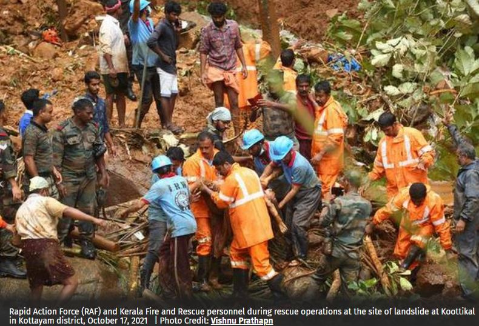

The death toll in rain-related incidents in Kerala rose to 27 on
October 17, with the recovery of more bodies from the landslip-ravaged
areas of Kottayam and Idukki districts. While the government agencies
are yet to complete assessment of the total losses, preliminary
reports suggested that houses located within a two-kilometre stretch
on the banks of the Pullakayar river were destroyed with the water
level rising upto 15 feet.
The heavy rain and landslides were also reported to have caused flash
floods in the Thalunkal, Yendayar and Kokkayar rivers, the tributaries
of the Pullakayar. Hundreds from Kodunga, Ilamkadu, and Koottikkal
Chappath have been shifted to the relief camps opened at St Mary’s
School, Koottikkal, and JJ Murphy School, in Yendayar.
Floodwaters have entered a number of houses in Thalavady,
Neerattupuram, Thakazhi, Muttar, Edathua, Veeyapuram, and Pallippad in
Upper Kuttanad. Water also entered the Chakkulathukavu Bhagavathy
temple. Prime Minister Narendra Modi on October 17 spoke with Kerala
Chief Minister Pinarayi Vijayan and discussed the situation in the
wake of heavy rains and landslides in the state. The toll from
disastrous flooding caused by heavy rains and landslides in hilly
areas of two central Kerala districts rose to 18 as rescue workers
recovered more bodies from the rubbles on October 17.
-----------------------------------------------------------------------------------------------------------------------------------------------
From:
https://www.thehindu.com/news/national/kerala/kerala-rains-live-updates-october-18-2021/article37048745.ece